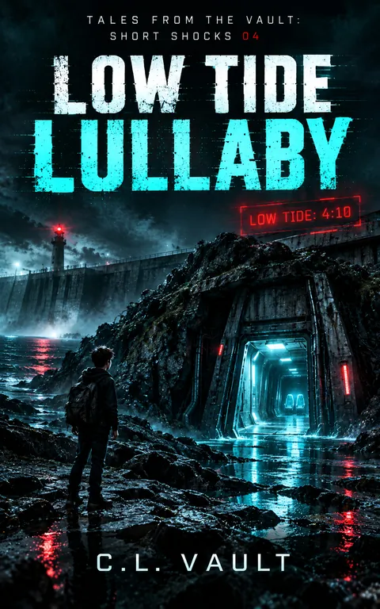

Low Tide Lullaby
Tales From the Vault: Short Shocks: 4
The ocean isn't singing. Something beneath it is waking up.
Kindle Unlimited reader? Membership eligibility for individual books is shown on Amazon. The format links above are paid affiliate links.
Purchase links open Amazon. Format availability is taken from the public catalog record.
What is on file
THE OCEAN ISN'T SINGING. SOMETHING BENEATH IT IS WAKING UP.
Twelve-year-old Sam Hawthorne has survived enough of Harbor City's cursed technology to know one rule: never trust a system that claims it's trying to help.
But the cove has started making a sound.
A low, rhythmic pulse. Strange temperature drops. Electronics detecting signals that shouldn't exist.
And every warning seems to point toward the same time.
Read the complete filed description
4:10.
Sam thinks it might be a whale.
He is very, very wrong.
Beneath the coastal rocks lies a hidden facility, a machine that has been waiting far longer than anyone remembers, and two mysterious control seats.
One seat is a trap.
The machine needs both.
As Harbor City's Coastal Safety Authority begins issuing impossible return notices, Sam discovers that the Seawall isn't simply protecting the city. It's hiding something the city intends to control.
And whatever is beneath the cove is almost ready to move.
ONE SEAT IS A TRAP. NEEDS TWO.
Low Tide Lullaby is Book 4 of Tales From the Vault: Short Shocks, an interconnected series of darkly funny science-fiction horror stories about impossible technology, sinister systems, and the secrets buried beneath Harbor City.
Further material may surface.
No connected records are currently listed for this entry. Connections are added only when the archive can support them, and not merely because two stories share a city.
Request filing notices ↗